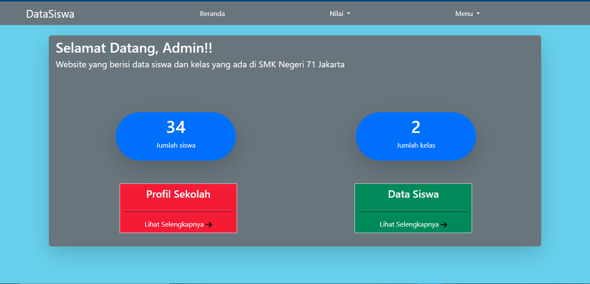
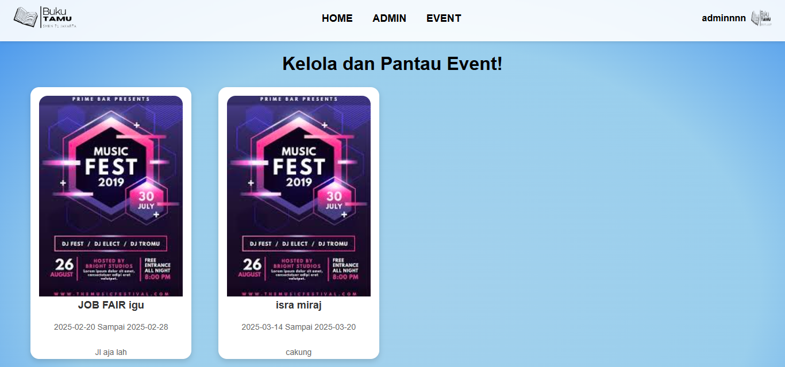

Halo, Saya Satria Farel Cipta Permata
Saya adalah Junior Web Developer yang berfokus pada aplikasi web efisien dan fungsional. Terus mendalami teknologi terbaru untuk solusi terbaik. Saya memiliki pengalaman dalam pengembangan aplikasi web menggunakan HTML, CSS, JavaScript, PHP, dan MySQL. Saya juga memiliki pengetahuan dalam menggunakan framework seperti Bootstrap dan Tailwind CSS. Saya selalu berusaha untuk belajar dan berkembang dalam bidang teknologi informasi, serta siap untuk menghadapi tantangan baru.
Pendidikan
MTs Ar-Rahmah UK
(2020 - 2023)
SMK Negeri 71
Rekayasa Perangkat Lunak (2023 - Sekarang)
Pengalaman
Ketua Panitia 17 Agustusan
(Agustus 2023)
- Mengkoordinasi panitia dan menyusun jadwal lomba untuk warga lingkungan
- Membangun semangat dan komunikasi antar anggota saat persiapan kegiatan
- Berhasil menyelenggarakan acara dengan partisipasi warga yang meningkat
WORKSHOP WEB TECHNOLOGY 2.0
(Juni 2024)
- Pengenalan Laravel 10 dan fitur-fitur terbaru
- Struktur routing dan implementasinya dalam aplikasi Laravel
- Teknik database management dan penggunaan migration dalam Laravel
- Best practice dalam pengembangan aplikasi web dengan Laravel
Humas DKM (Dewan Kemakmuran Masjid)
(Sekarang)
- Membantu pengelolaan kegiatan rohani di lingkungan sekolah dan masjid
- Menjadi penghubung antara panitia dan peserta dalam kegiatan keagamaan
- Turut serta dalam perencanaan acara seperti kajian, buka bersama, dan santunan
Sekbid HAM OSIS SMK
(2023 - 2024)
- Menyusun dan melaksanakan program kerja seputar hak asasi siswa di sekolah
- Aktif menyuarakan aspirasi siswa dalam rapat OSIS dan forum sekolah
- Bekerja sama dengan bidang lain untuk kampanye kesadaran sosial
Proyek
Food Start
.png)
- Dibangun dengan Bootstrap & JavaScript
- Direktori resep makanan khas daerah lengkap dengan foto dan deskripsi
- Fitur pencarian dan filter berdasarkan kategori masakan
- Tampilan responsif untuk mobile & desktop
Data Siswa
- Dibangun dengan Bootstrap, JavaScript, PHP & MySql
- CRUD lengkap untuk data siswa dan guru
- Autentikasi sederhana untuk admin & user
- Laporan PDF
Buku Tamu Digital
- JavaScript, PHP, MySql
- Pendataan tamu via scanning QR code real-time
- Dashboard admin untuk melihat statistik kunjungan
- Fitur cetak laporan
Keahlian

Bootstrap

Tailwind

JavaScript

PHP

Flutter

WordPress

Figma
Sertifikat

JS Course - CodeLiber

SQL Course - Mimo